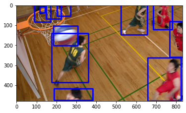

<!doctype html>
<html class="no-js" lang="en">
  <head><meta charset="utf-8"/>
    <meta name="viewport" content="width=device-width,initial-scale=1"/>
    <meta name="color-scheme" content="light dark"><meta name="generator" content="Docutils 0.19: https://docutils.sourceforge.io/" />
<link rel="index" title="Index" href="../genindex.html" /><link rel="search" title="Search" href="../search.html" />

    <meta name="generator" content="sphinx-5.3.0, furo 2022.09.29"/>
        <title>&lt;no title&gt; - CompressAIVision</title>
      <link rel="stylesheet" type="text/css" href="../_static/pygments.css" />
    <link rel="stylesheet" type="text/css" href="../_static/styles/furo.css?digest=d81277517bee4d6b0349d71bb2661d4890b5617c" />
    <link rel="stylesheet" type="text/css" href="../_static/styles/furo-extensions.css?digest=30d1aed668e5c3a91c3e3bf6a60b675221979f0e" />
    
    


<style>
  body {
    --color-code-background: #f8f8f8;
  --color-code-foreground: black;
  --color-brand-primary: #00aaee;
  --color-brand-content: #00aaee;
  
  }
  @media not print {
    body[data-theme="dark"] {
      --color-code-background: #202020;
  --color-code-foreground: #d0d0d0;
  
    }
    @media (prefers-color-scheme: dark) {
      body:not([data-theme="light"]) {
        --color-code-background: #202020;
  --color-code-foreground: #d0d0d0;
  
      }
    }
  }
</style></head>
  <body>
    
    <script>
      document.body.dataset.theme = localStorage.getItem("theme") || "auto";
    </script>
    

<svg xmlns="http://www.w3.org/2000/svg" style="display: none;">
  <symbol id="svg-toc" viewBox="0 0 24 24">
    <title>Contents</title>
    <svg stroke="currentColor" fill="currentColor" stroke-width="0" viewBox="0 0 1024 1024">
      <path d="M408 442h480c4.4 0 8-3.6 8-8v-56c0-4.4-3.6-8-8-8H408c-4.4 0-8 3.6-8 8v56c0 4.4 3.6 8 8 8zm-8 204c0 4.4 3.6 8 8 8h480c4.4 0 8-3.6 8-8v-56c0-4.4-3.6-8-8-8H408c-4.4 0-8 3.6-8 8v56zm504-486H120c-4.4 0-8 3.6-8 8v56c0 4.4 3.6 8 8 8h784c4.4 0 8-3.6 8-8v-56c0-4.4-3.6-8-8-8zm0 632H120c-4.4 0-8 3.6-8 8v56c0 4.4 3.6 8 8 8h784c4.4 0 8-3.6 8-8v-56c0-4.4-3.6-8-8-8zM115.4 518.9L271.7 642c5.8 4.6 14.4.5 14.4-6.9V388.9c0-7.4-8.5-11.5-14.4-6.9L115.4 505.1a8.74 8.74 0 0 0 0 13.8z"/>
    </svg>
  </symbol>
  <symbol id="svg-menu" viewBox="0 0 24 24">
    <title>Menu</title>
    <svg xmlns="http://www.w3.org/2000/svg" viewBox="0 0 24 24" fill="none" stroke="currentColor"
      stroke-width="2" stroke-linecap="round" stroke-linejoin="round" class="feather-menu">
      <line x1="3" y1="12" x2="21" y2="12"></line>
      <line x1="3" y1="6" x2="21" y2="6"></line>
      <line x1="3" y1="18" x2="21" y2="18"></line>
    </svg>
  </symbol>
  <symbol id="svg-arrow-right" viewBox="0 0 24 24">
    <title>Expand</title>
    <svg xmlns="http://www.w3.org/2000/svg" viewBox="0 0 24 24" fill="none" stroke="currentColor"
      stroke-width="2" stroke-linecap="round" stroke-linejoin="round" class="feather-chevron-right">
      <polyline points="9 18 15 12 9 6"></polyline>
    </svg>
  </symbol>
  <symbol id="svg-sun" viewBox="0 0 24 24">
    <title>Light mode</title>
    <svg xmlns="http://www.w3.org/2000/svg" viewBox="0 0 24 24" fill="none" stroke="currentColor"
      stroke-width="1.5" stroke-linecap="round" stroke-linejoin="round" class="feather-sun">
      <circle cx="12" cy="12" r="5"></circle>
      <line x1="12" y1="1" x2="12" y2="3"></line>
      <line x1="12" y1="21" x2="12" y2="23"></line>
      <line x1="4.22" y1="4.22" x2="5.64" y2="5.64"></line>
      <line x1="18.36" y1="18.36" x2="19.78" y2="19.78"></line>
      <line x1="1" y1="12" x2="3" y2="12"></line>
      <line x1="21" y1="12" x2="23" y2="12"></line>
      <line x1="4.22" y1="19.78" x2="5.64" y2="18.36"></line>
      <line x1="18.36" y1="5.64" x2="19.78" y2="4.22"></line>
    </svg>
  </symbol>
  <symbol id="svg-moon" viewBox="0 0 24 24">
    <title>Dark mode</title>
    <svg xmlns="http://www.w3.org/2000/svg" viewBox="0 0 24 24" fill="none" stroke="currentColor"
      stroke-width="1.5" stroke-linecap="round" stroke-linejoin="round" class="icon-tabler-moon">
      <path stroke="none" d="M0 0h24v24H0z" fill="none" />
      <path d="M12 3c.132 0 .263 0 .393 0a7.5 7.5 0 0 0 7.92 12.446a9 9 0 1 1 -8.313 -12.454z" />
    </svg>
  </symbol>
  <symbol id="svg-sun-half" viewBox="0 0 24 24">
    <title>Auto light/dark mode</title>
    <svg xmlns="http://www.w3.org/2000/svg" viewBox="0 0 24 24" fill="none" stroke="currentColor"
      stroke-width="1.5" stroke-linecap="round" stroke-linejoin="round" class="icon-tabler-shadow">
      <path stroke="none" d="M0 0h24v24H0z" fill="none"/>
      <circle cx="12" cy="12" r="9" />
      <path d="M13 12h5" />
      <path d="M13 15h4" />
      <path d="M13 18h1" />
      <path d="M13 9h4" />
      <path d="M13 6h1" />
    </svg>
  </symbol>
</svg>

<input type="checkbox" class="sidebar-toggle" name="__navigation" id="__navigation">
<input type="checkbox" class="sidebar-toggle" name="__toc" id="__toc">
<label class="overlay sidebar-overlay" for="__navigation">
  <div class="visually-hidden">Hide navigation sidebar</div>
</label>
<label class="overlay toc-overlay" for="__toc">
  <div class="visually-hidden">Hide table of contents sidebar</div>
</label>


<div class="page">
  <header class="mobile-header">
    <div class="header-left">
      <label class="nav-overlay-icon" for="__navigation">
        <div class="visually-hidden">Toggle site navigation sidebar</div>
        <i class="icon"><svg><use href="#svg-menu"></use></svg></i>
      </label>
    </div>
    <div class="header-center">
      <a href="../index.html"><div class="brand">CompressAIVision</div></a>
    </div>
    <div class="header-right">
      <div class="theme-toggle-container theme-toggle-header">
        <button class="theme-toggle">
          <div class="visually-hidden">Toggle Light / Dark / Auto color theme</div>
          <svg class="theme-icon-when-auto"><use href="#svg-sun-half"></use></svg>
          <svg class="theme-icon-when-dark"><use href="#svg-moon"></use></svg>
          <svg class="theme-icon-when-light"><use href="#svg-sun"></use></svg>
        </button>
      </div>
      <label class="toc-overlay-icon toc-header-icon no-toc" for="__toc">
        <div class="visually-hidden">Toggle table of contents sidebar</div>
        <i class="icon"><svg><use href="#svg-toc"></use></svg></i>
      </label>
    </div>
  </header>
  <aside class="sidebar-drawer">
    <div class="sidebar-container">
      
      <div class="sidebar-sticky"><a class="sidebar-brand centered" href="../index.html">
  
  <div class="sidebar-logo-container">
    
  </div>
  
  
</a><form class="sidebar-search-container" method="get" action="../search.html" role="search">
  <input class="sidebar-search" placeholder=Search name="q" aria-label="Search">
  <input type="hidden" name="check_keywords" value="yes">
  <input type="hidden" name="area" value="default">
</form>
<div id="searchbox"></div><div class="sidebar-scroll"><div class="sidebar-tree">
  <p class="caption" role="heading"><span class="caption-text">Setup</span></p>
<ul>
<li class="toctree-l1"><a class="reference internal" href="../installation.html">Installation</a></li>
<li class="toctree-l1"><a class="reference internal" href="../docker.html">Docker</a></li>
</ul>
<p class="caption" role="heading"><span class="caption-text">Tutorials</span></p>
<ul>
<li class="toctree-l1 has-children"><a class="reference internal" href="index.html">Fiftyone</a><input class="toctree-checkbox" id="toctree-checkbox-1" name="toctree-checkbox-1" role="switch" type="checkbox"/><label for="toctree-checkbox-1"><div class="visually-hidden">Toggle child pages in navigation</div><i class="icon"><svg><use href="#svg-arrow-right"></use></svg></i></label><ul>
<li class="toctree-l2"><a class="reference internal" href="fiftyone.html">Fiftyone and MongoDB</a></li>
</ul>
</li>
<li class="toctree-l1 has-children"><a class="reference internal" href="index.html#cli-tutorial">CLI Tutorial</a><input class="toctree-checkbox" id="toctree-checkbox-2" name="toctree-checkbox-2" role="switch" type="checkbox"/><label for="toctree-checkbox-2"><div class="visually-hidden">Toggle child pages in navigation</div><i class="icon"><svg><use href="#svg-arrow-right"></use></svg></i></label><ul>
<li class="toctree-l2"><a class="reference internal" href="cli_tutorial_1.html">1. Datasets and Evaluation</a></li>
<li class="toctree-l2"><a class="reference internal" href="cli_tutorial_2.html">2. Registering Datasets</a></li>
<li class="toctree-l2"><a class="reference internal" href="cli_tutorial_3.html">3. MPEG-VCM Evaluation</a></li>
<li class="toctree-l2"><a class="reference internal" href="cli_tutorial_4.html">4. Evaluate Custom Model</a></li>
<li class="toctree-l2"><a class="reference internal" href="cli_tutorial_5.html">5. Plotting</a></li>
<li class="toctree-l2"><a class="reference internal" href="cli_tutorial_6.html">6. VTM benchmark generation</a></li>
<li class="toctree-l2"><a class="reference internal" href="cli_tutorial_7.html">7. Importing and Using Video</a></li>
<li class="toctree-l2"><a class="reference internal" href="cli_reference.html">CLI Reference</a></li>
</ul>
</li>
<li class="toctree-l1 has-children"><a class="reference internal" href="index.html#library-tutorial">Library Tutorial</a><input class="toctree-checkbox" id="toctree-checkbox-3" name="toctree-checkbox-3" role="switch" type="checkbox"/><label for="toctree-checkbox-3"><div class="visually-hidden">Toggle child pages in navigation</div><i class="icon"><svg><use href="#svg-arrow-right"></use></svg></i></label><ul>
<li class="toctree-l2"><a class="reference internal" href="download.html">1. Download Images</a></li>
<li class="toctree-l2"><a class="reference internal" href="detectron2.html">2. Run Detectron2</a></li>
<li class="toctree-l2"><a class="reference internal" href="evaluate.html">3. Evaluate</a></li>
<li class="toctree-l2"><a class="reference internal" href="encdec.html">4. Creating an EncoderDecoder class</a></li>
</ul>
</li>
</ul>
<p class="caption" role="heading"><span class="caption-text">Library API</span></p>
<ul>
<li class="toctree-l1"><a class="reference internal" href="../conversion/index.html">compressai_vision.conversion</a></li>
<li class="toctree-l1 has-children"><a class="reference internal" href="../evaluation/index.html">compressai_vision.evaluation</a><input class="toctree-checkbox" id="toctree-checkbox-4" name="toctree-checkbox-4" role="switch" type="checkbox"/><label for="toctree-checkbox-4"><div class="visually-hidden">Toggle child pages in navigation</div><i class="icon"><svg><use href="#svg-arrow-right"></use></svg></i></label><ul>
<li class="toctree-l2"><a class="reference internal" href="../evaluation/pipeline/index.html">compressai_vision.evaluation.pipeline</a></li>
<li class="toctree-l2"><a class="reference internal" href="../evaluation/fo/index.html">compressai_vision.evaluation.fo</a></li>
</ul>
</li>
</ul>
<p class="caption" role="heading"><span class="caption-text">Datasets</span></p>
<ul>
<li class="toctree-l1"><a class="reference internal" href="../datasets.html">MPEG-VCM Datasets</a></li>
<li class="toctree-l1"><a class="reference internal" href="../datasets.html#other-datasets">Other Datasets</a></li>
</ul>
<p class="caption" role="heading"><span class="caption-text">faq</span></p>
<ul>
<li class="toctree-l1"><a class="reference internal" href="../faq.html">FAQ</a></li>
</ul>
<p class="caption" role="heading"><span class="caption-text">Development</span></p>
<ul>
<li class="toctree-l1"><a class="reference external" href="https://github.com/InterDigitalInc/CompressAI-Vision">Github repository</a></li>
</ul>

</div>
</div>

      </div>
      
    </div>
  </aside>
  <div class="main">
    <div class="content">
      <div class="article-container">
        <a href="#" class="back-to-top muted-link">
          <svg xmlns="http://www.w3.org/2000/svg" viewBox="0 0 24 24">
            <path d="M13 20h-2V8l-5.5 5.5-1.42-1.42L12 4.16l7.92 7.92-1.42 1.42L13 8v12z"></path>
          </svg>
          <span>Back to top</span>
        </a>
        <div class="content-icon-container">
          
<div class="theme-toggle-container theme-toggle-content">
            <button class="theme-toggle">
              <div class="visually-hidden">Toggle Light / Dark / Auto color theme</div>
              <svg class="theme-icon-when-auto"><use href="#svg-sun-half"></use></svg>
              <svg class="theme-icon-when-dark"><use href="#svg-moon"></use></svg>
              <svg class="theme-icon-when-light"><use href="#svg-sun"></use></svg>
            </button>
          </div>
          <label class="toc-overlay-icon toc-content-icon no-toc" for="__toc">
            <div class="visually-hidden">Toggle table of contents sidebar</div>
            <i class="icon"><svg><use href="#svg-toc"></use></svg></i>
          </label>
        </div>
        <article role="main">
          <p>In this tutorial you will learn how to:</p>
<ul class="simple">
<li><p>Download and register video datasets</p></li>
<li><p>Convert and import the <code class="docutils literal notranslate"><span class="pre">sfu-hw-objects-v1</span></code> raw custom video data
format</p></li>
<li><p>Play around with video datasets, visualize frames and detection
results</p></li>
<li><p>Evaluate a video dataset</p></li>
</ul>
<p>In chapter 2 of this tutorial you learned how to download and register
datasets to fiftyone with the <code class="docutils literal notranslate"><span class="pre">compressai-vision</span> <span class="pre">register</span></code> command.</p>
<p>Exactly the same command works for video datasets:</p>
<div class="highlight-bash notranslate"><div class="highlight"><pre><span></span>compressai-vision download --dataset-name<span class="o">=</span>quickstart-video --y
</pre></div>
</div>
<div class="highlight-text notranslate"><div class="highlight"><pre><span></span>importing fiftyone
fiftyone imported

WARNING: downloading ALL images.  You might want to use the --lists option to download only certain images
Using list files:     None
Number of images:     ?
Database name   :     quickstart-video
Subname/split   :     None
Target dir      :     None

Dataset already downloaded
Loading existing dataset &#39;quickstart-video&#39;. To reload from disk, either delete the existing dataset or provide a custom `dataset_name` to use
</pre></div>
</div>
<p>If you have your video dataset arranged in one of the standard <a class="reference external" href="https://voxel51.com/docs/fiftyone/api/fiftyone.types.dataset_types.html">video
data formats supported by
fiftyone</a>,
you’re good to go.</p>
<p>Manipulating and visualizing video datasets from python works a bit
different to image datasets. For this, please see the end of this
tutorial.</p>
<p>Next we will import a raw custom dataset, namely the
<a class="reference external" href="http://dx.doi.org/10.17632/hwm673bv4m.1">sfu-hw-objects-v1</a> into
fiftyone.</p>
<p>This format consists raw YUV video files and annotations. Let’s see how
the folder structure is roughly organized. We’ll be using in this
tutorial a “mock” version of the dataset with only two video classes:</p>
<div class="highlight-bash notranslate"><div class="highlight"><pre><span></span>tree <span class="o">{</span>path_to_sfu_hw_objects_v1<span class="o">}</span> --filelimit<span class="o">=</span><span class="m">10</span> <span class="p">|</span> cat
</pre></div>
</div>
<div class="highlight-text notranslate"><div class="highlight"><pre><span></span>/home/sampsa/silo/interdigital/mock/SFU-HW-Objects-v1
├── ClassC
│   ├── Annotations
│   │   └── BasketballDrill [502 entries exceeds filelimit, not opening dir]
│   └── BasketballDrill_832x480_50Hz_8bit_P420.yuv
└── ClassX
    ├── Annotations
    │   └── BasketballDrill
    │       ├── BasketballDrill_832x480_50_seq_001.txt
    │       ├── BasketballDrill_832x480_50_seq_002.txt
    │       ├── BasketballDrill_832x480_50_seq_003.txt
    │       ├── BasketballDrill_832x480_50_seq_004.txt
    │       └── BasketballDrill_832x480_object.list
    └── BasketballDrill_832x480_50Hz_8bit_P420.yuv -&gt; /home/sampsa/silo/interdigital/mock/SFU-HW-Objects-v1/ClassC/BasketballDrill_832x480_50Hz_8bit_P420.yuv

6 directories, 7 files
</pre></div>
</div>
<p>Importing mpeg-vcom custom datasets (for more info see Dataset section
of the documentation) can be done with <code class="docutils literal notranslate"><span class="pre">import-custom</span></code> command. For
<code class="docutils literal notranslate"><span class="pre">sfu-hw-objects-v1</span></code> it also converts on-the-fly the raw YUV images
into proper video format:</p>
<div class="highlight-bash notranslate"><div class="highlight"><pre><span></span>compressai-vision import-custom --dataset-type<span class="o">=</span>sfu-hw-objects-v1 --dir<span class="o">={</span>path_to_sfu_hw_objects_v1<span class="o">}</span> --y
</pre></div>
</div>
<div class="highlight-text notranslate"><div class="highlight"><pre><span></span>importing fiftyone
fiftyone imported
WARNING: dataset sfu-hw-objects-v1 already exists: will delete and rewrite

Importing a custom video format into fiftyone

Dataset type           :  sfu-hw-objects-v1
Dataset root directory :  /home/sampsa/silo/interdigital/mock/SFU-HW-Objects-v1

finding .yuv files from /home/sampsa/silo/interdigital/mock/SFU-HW-Objects-v1
ffmpeg -y -f rawvideo -pixel_format yuv420p -video_size 832x480 -i /home/sampsa/silo/interdigital/mock/SFU-HW-Objects-v1/ClassC/BasketballDrill_832x480_50Hz_8bit_P420.yuv -an -c:v h264 -q 0 /home/sampsa/silo/interdigital/mock/SFU-HW-Objects-v1/ClassC/Annotations/BasketballDrill/video.mp4
ffmpeg version 4.2.7-0ubuntu0.1 Copyright (c) 2000-2022 the FFmpeg developers
  built with gcc 9 (Ubuntu 9.4.0-1ubuntu1~20.04.1)
  configuration: --prefix=/usr --extra-version=0ubuntu0.1 --toolchain=hardened --libdir=/usr/lib/x86_64-linux-gnu --incdir=/usr/include/x86_64-linux-gnu --arch=amd64 --enable-gpl --disable-stripping --enable-avresample --disable-filter=resample --enable-avisynth --enable-gnutls --enable-ladspa --enable-libaom --enable-libass --enable-libbluray --enable-libbs2b --enable-libcaca --enable-libcdio --enable-libcodec2 --enable-libflite --enable-libfontconfig --enable-libfreetype --enable-libfribidi --enable-libgme --enable-libgsm --enable-libjack --enable-libmp3lame --enable-libmysofa --enable-libopenjpeg --enable-libopenmpt --enable-libopus --enable-libpulse --enable-librsvg --enable-librubberband --enable-libshine --enable-libsnappy --enable-libsoxr --enable-libspeex --enable-libssh --enable-libtheora --enable-libtwolame --enable-libvidstab --enable-libvorbis --enable-libvpx --enable-libwavpack --enable-libwebp --enable-libx265 --enable-libxml2 --enable-libxvid --enable-libzmq --enable-libzvbi --enable-lv2 --enable-omx --enable-openal --enable-opencl --enable-opengl --enable-sdl2 --enable-libdc1394 --enable-libdrm --enable-libiec61883 --enable-nvenc --enable-chromaprint --enable-frei0r --enable-libx264 --enable-shared
  libavutil      56. 31.100 / 56. 31.100
  libavcodec     58. 54.100 / 58. 54.100
  libavformat    58. 29.100 / 58. 29.100
  libavdevice    58.  8.100 / 58.  8.100
  libavfilter     7. 57.100 /  7. 57.100
  libavresample   4.  0.  0 /  4.  0.  0
  libswscale      5.  5.100 /  5.  5.100
  libswresample   3.  5.100 /  3.  5.100
  libpostproc    55.  5.100 / 55.  5.100
[rawvideo @ 0x561a0d3c17c0] Estimating duration from bitrate, this may be inaccurate
Input #0, rawvideo, from &#39;/home/sampsa/silo/interdigital/mock/SFU-HW-Objects-v1/ClassC/BasketballDrill_832x480_50Hz_8bit_P420.yuv&#39;:
  Duration: 00:00:20.04, start: 0.000000, bitrate: 119808 kb/s
    Stream #0:0: Video: rawvideo (I420 / 0x30323449), yuv420p, 832x480, 119808 kb/s, 25 tbr, 25 tbn, 25 tbc
Stream mapping:
  Stream #0:0 -&gt; #0:0 (rawvideo (native) -&gt; h264 (libx264))
Press [q] to stop, [?] for help
[libx264 @ 0x561a0d3cf300] using cpu capabilities: MMX2 SSE2Fast SSSE3 SSE4.2 AVX FMA3 BMI2 AVX2
[libx264 @ 0x561a0d3cf300] profile High, level 3.0
[libx264 @ 0x561a0d3cf300] 264 - core 155 r2917 0a84d98 - H.264/MPEG-4 AVC codec - Copyleft 2003-2018 - http://www.videolan.org/x264.html - options: cabac=1 ref=3 deblock=1:0:0 analyse=0x3:0x113 me=hex subme=7 psy=1 psy_rd=1.00:0.00 mixed_ref=1 me_range=16 chroma_me=1 trellis=1 8x8dct=1 cqm=0 deadzone=21,11 fast_pskip=1 chroma_qp_offset=-2 threads=12 lookahead_threads=2 sliced_threads=0 nr=0 decimate=1 interlaced=0 bluray_compat=0 constrained_intra=0 bframes=3 b_pyramid=2 b_adapt=1 b_bias=0 direct=1 weightb=1 open_gop=0 weightp=2 keyint=250 keyint_min=25 scenecut=40 intra_refresh=0 rc_lookahead=40 rc=crf mbtree=1 crf=23.0 qcomp=0.60 qpmin=0 qpmax=69 qpstep=4 ip_ratio=1.40 aq=1:1.00
Output #0, mp4, to &#39;/home/sampsa/silo/interdigital/mock/SFU-HW-Objects-v1/ClassC/Annotations/BasketballDrill/video.mp4&#39;:
  Metadata:
    encoder         : Lavf58.29.100
    Stream #0:0: Video: h264 (libx264) (avc1 / 0x31637661), yuv420p, 832x480, q=-1--1, 25 fps, 12800 tbn, 25 tbc
    Metadata:
      encoder         : Lavc58.54.100 libx264
    Side data:
      cpb: bitrate max/min/avg: 0/0/0 buffer size: 0 vbv_delay: -1
frame=  501 fps=143 q=-1.0 Lsize=    3979kB time=00:00:19.92 bitrate=1636.2kbits/s speed=5.67x
video:3972kB audio:0kB subtitle:0kB other streams:0kB global headers:0kB muxing overhead: 0.169325%
[libx264 @ 0x561a0d3cf300] frame I:3     Avg QP:22.61  size: 56539
[libx264 @ 0x561a0d3cf300] frame P:126   Avg QP:24.67  size: 17479
[libx264 @ 0x561a0d3cf300] frame B:372   Avg QP:28.66  size:  4556
[libx264 @ 0x561a0d3cf300] consecutive B-frames:  1.0%  0.0%  0.0% 99.0%
[libx264 @ 0x561a0d3cf300] mb I  I16..4: 13.3% 37.2% 49.4%
[libx264 @ 0x561a0d3cf300] mb P  I16..4:  0.1% 11.2%  6.3%  P16..4: 42.9% 16.1% 11.6%  0.0%  0.0%    skip:11.7%
[libx264 @ 0x561a0d3cf300] mb B  I16..4:  0.0%  0.7%  0.4%  B16..8: 35.6%  9.2%  3.6%  direct: 3.0%  skip:47.6%  L0:43.7% L1:43.7% BI:12.7%
[libx264 @ 0x561a0d3cf300] 8x8 transform intra:60.9% inter:67.7%
[libx264 @ 0x561a0d3cf300] coded y,uvDC,uvAC intra: 87.9% 88.2% 66.7% inter: 22.5% 18.1% 4.7%
[libx264 @ 0x561a0d3cf300] i16 v,h,dc,p: 57% 13%  8% 22%
[libx264 @ 0x561a0d3cf300] i8 v,h,dc,ddl,ddr,vr,hd,vl,hu: 11%  8%  9%  7% 19% 17% 10%  9%  9%
[libx264 @ 0x561a0d3cf300] i4 v,h,dc,ddl,ddr,vr,hd,vl,hu: 14%  9% 13%  7% 19% 15%  8%  7%  6%
[libx264 @ 0x561a0d3cf300] i8c dc,h,v,p: 48% 17% 22% 13%
[libx264 @ 0x561a0d3cf300] Weighted P-Frames: Y:0.0% UV:0.0%
[libx264 @ 0x561a0d3cf300] ref P L0: 44.5% 27.1% 14.9% 13.6%
[libx264 @ 0x561a0d3cf300] ref B L0: 85.6% 10.0%  4.4%
[libx264 @ 0x561a0d3cf300] ref B L1: 94.4%  5.6%
[libx264 @ 0x561a0d3cf300] kb/s:1623.41
ffmpeg -y -f rawvideo -pixel_format yuv420p -video_size 832x480 -i /home/sampsa/silo/interdigital/mock/SFU-HW-Objects-v1/ClassX/BasketballDrill_832x480_50Hz_8bit_P420.yuv -an -c:v h264 -q 0 /home/sampsa/silo/interdigital/mock/SFU-HW-Objects-v1/ClassX/Annotations/BasketballDrill/video.mp4
ffmpeg version 4.2.7-0ubuntu0.1 Copyright (c) 2000-2022 the FFmpeg developers
  built with gcc 9 (Ubuntu 9.4.0-1ubuntu1~20.04.1)
  configuration: --prefix=/usr --extra-version=0ubuntu0.1 --toolchain=hardened --libdir=/usr/lib/x86_64-linux-gnu --incdir=/usr/include/x86_64-linux-gnu --arch=amd64 --enable-gpl --disable-stripping --enable-avresample --disable-filter=resample --enable-avisynth --enable-gnutls --enable-ladspa --enable-libaom --enable-libass --enable-libbluray --enable-libbs2b --enable-libcaca --enable-libcdio --enable-libcodec2 --enable-libflite --enable-libfontconfig --enable-libfreetype --enable-libfribidi --enable-libgme --enable-libgsm --enable-libjack --enable-libmp3lame --enable-libmysofa --enable-libopenjpeg --enable-libopenmpt --enable-libopus --enable-libpulse --enable-librsvg --enable-librubberband --enable-libshine --enable-libsnappy --enable-libsoxr --enable-libspeex --enable-libssh --enable-libtheora --enable-libtwolame --enable-libvidstab --enable-libvorbis --enable-libvpx --enable-libwavpack --enable-libwebp --enable-libx265 --enable-libxml2 --enable-libxvid --enable-libzmq --enable-libzvbi --enable-lv2 --enable-omx --enable-openal --enable-opencl --enable-opengl --enable-sdl2 --enable-libdc1394 --enable-libdrm --enable-libiec61883 --enable-nvenc --enable-chromaprint --enable-frei0r --enable-libx264 --enable-shared
  libavutil      56. 31.100 / 56. 31.100
  libavcodec     58. 54.100 / 58. 54.100
  libavformat    58. 29.100 / 58. 29.100
  libavdevice    58.  8.100 / 58.  8.100
  libavfilter     7. 57.100 /  7. 57.100
  libavresample   4.  0.  0 /  4.  0.  0
  libswscale      5.  5.100 /  5.  5.100
  libswresample   3.  5.100 /  3.  5.100
  libpostproc    55.  5.100 / 55.  5.100
[rawvideo @ 0x559c0f4467c0] Estimating duration from bitrate, this may be inaccurate
Input #0, rawvideo, from &#39;/home/sampsa/silo/interdigital/mock/SFU-HW-Objects-v1/ClassX/BasketballDrill_832x480_50Hz_8bit_P420.yuv&#39;:
  Duration: 00:00:20.04, start: 0.000000, bitrate: 119808 kb/s
    Stream #0:0: Video: rawvideo (I420 / 0x30323449), yuv420p, 832x480, 119808 kb/s, 25 tbr, 25 tbn, 25 tbc
Stream mapping:
  Stream #0:0 -&gt; #0:0 (rawvideo (native) -&gt; h264 (libx264))
Press [q] to stop, [?] for help
[libx264 @ 0x559c0f454300] using cpu capabilities: MMX2 SSE2Fast SSSE3 SSE4.2 AVX FMA3 BMI2 AVX2
[libx264 @ 0x559c0f454300] profile High, level 3.0
[libx264 @ 0x559c0f454300] 264 - core 155 r2917 0a84d98 - H.264/MPEG-4 AVC codec - Copyleft 2003-2018 - http://www.videolan.org/x264.html - options: cabac=1 ref=3 deblock=1:0:0 analyse=0x3:0x113 me=hex subme=7 psy=1 psy_rd=1.00:0.00 mixed_ref=1 me_range=16 chroma_me=1 trellis=1 8x8dct=1 cqm=0 deadzone=21,11 fast_pskip=1 chroma_qp_offset=-2 threads=12 lookahead_threads=2 sliced_threads=0 nr=0 decimate=1 interlaced=0 bluray_compat=0 constrained_intra=0 bframes=3 b_pyramid=2 b_adapt=1 b_bias=0 direct=1 weightb=1 open_gop=0 weightp=2 keyint=250 keyint_min=25 scenecut=40 intra_refresh=0 rc_lookahead=40 rc=crf mbtree=1 crf=23.0 qcomp=0.60 qpmin=0 qpmax=69 qpstep=4 ip_ratio=1.40 aq=1:1.00
Output #0, mp4, to &#39;/home/sampsa/silo/interdigital/mock/SFU-HW-Objects-v1/ClassX/Annotations/BasketballDrill/video.mp4&#39;:
  Metadata:
    encoder         : Lavf58.29.100
    Stream #0:0: Video: h264 (libx264) (avc1 / 0x31637661), yuv420p, 832x480, q=-1--1, 25 fps, 12800 tbn, 25 tbc
    Metadata:
      encoder         : Lavc58.54.100 libx264
    Side data:
      cpb: bitrate max/min/avg: 0/0/0 buffer size: 0 vbv_delay: -1
frame=  501 fps=131 q=-1.0 Lsize=    3979kB time=00:00:19.92 bitrate=1636.2kbits/s speed= 5.2x
video:3972kB audio:0kB subtitle:0kB other streams:0kB global headers:0kB muxing overhead: 0.169325%
[libx264 @ 0x559c0f454300] frame I:3     Avg QP:22.61  size: 56539
[libx264 @ 0x559c0f454300] frame P:126   Avg QP:24.67  size: 17479
[libx264 @ 0x559c0f454300] frame B:372   Avg QP:28.66  size:  4556
[libx264 @ 0x559c0f454300] consecutive B-frames:  1.0%  0.0%  0.0% 99.0%
[libx264 @ 0x559c0f454300] mb I  I16..4: 13.3% 37.2% 49.4%
[libx264 @ 0x559c0f454300] mb P  I16..4:  0.1% 11.2%  6.3%  P16..4: 42.9% 16.1% 11.6%  0.0%  0.0%    skip:11.7%
[libx264 @ 0x559c0f454300] mb B  I16..4:  0.0%  0.7%  0.4%  B16..8: 35.6%  9.2%  3.6%  direct: 3.0%  skip:47.6%  L0:43.7% L1:43.7% BI:12.7%
[libx264 @ 0x559c0f454300] 8x8 transform intra:60.9% inter:67.7%
[libx264 @ 0x559c0f454300] coded y,uvDC,uvAC intra: 87.9% 88.2% 66.7% inter: 22.5% 18.1% 4.7%
[libx264 @ 0x559c0f454300] i16 v,h,dc,p: 57% 13%  8% 22%
[libx264 @ 0x559c0f454300] i8 v,h,dc,ddl,ddr,vr,hd,vl,hu: 11%  8%  9%  7% 19% 17% 10%  9%  9%
[libx264 @ 0x559c0f454300] i4 v,h,dc,ddl,ddr,vr,hd,vl,hu: 14%  9% 13%  7% 19% 15%  8%  7%  6%
[libx264 @ 0x559c0f454300] i8c dc,h,v,p: 48% 17% 22% 13%
[libx264 @ 0x559c0f454300] Weighted P-Frames: Y:0.0% UV:0.0%
[libx264 @ 0x559c0f454300] ref P L0: 44.5% 27.1% 14.9% 13.6%
[libx264 @ 0x559c0f454300] ref B L0: 85.6% 10.0%  4.4%
[libx264 @ 0x559c0f454300] ref B L1: 94.4%  5.6%
[libx264 @ 0x559c0f454300] kb/s:1623.41
video conversion done
searching for /home/sampsa/silo/interdigital/mock/SFU-HW-Objects-v1/Class*
Dataset sfu-hw-objects-v1 exists.  Will remove it first
Dataset sfu-hw-objects-v1 created

In class directory /home/sampsa/silo/interdigital/mock/SFU-HW-Objects-v1/ClassC
searching for /home/sampsa/silo/interdigital/mock/SFU-HW-Objects-v1/ClassC/Annotations/*
--&gt; registering video /home/sampsa/silo/interdigital/mock/SFU-HW-Objects-v1/ClassC/Annotations/BasketballDrill/video.mp4
--&gt; registered new video sample: ClassC BasketballDrill with 500 frames

In class directory /home/sampsa/silo/interdigital/mock/SFU-HW-Objects-v1/ClassX
searching for /home/sampsa/silo/interdigital/mock/SFU-HW-Objects-v1/ClassX/Annotations/*
--&gt; registering video /home/sampsa/silo/interdigital/mock/SFU-HW-Objects-v1/ClassX/Annotations/BasketballDrill/video.mp4
--&gt; registered new video sample: ClassX BasketballDrill with 4 frames

Dataset saved
</pre></div>
</div>
<p>In order to demonstrate how video datasets are used, let’s continue in
python notebook:</p>
<div class="highlight-ipython3 notranslate"><div class="highlight"><pre><span></span>import cv2
import matplotlib.pyplot as plt
import fiftyone as fo
from fiftyone import ViewField as F
from math import floor
</pre></div>
</div>
<div class="highlight-ipython3 notranslate"><div class="highlight"><pre><span></span>dataset=fo.load_dataset(&quot;sfu-hw-objects-v1&quot;)
</pre></div>
</div>
<div class="highlight-ipython3 notranslate"><div class="highlight"><pre><span></span>dataset
</pre></div>
</div>
<div class="highlight-default notranslate"><div class="highlight"><pre><span></span><span class="n">Name</span><span class="p">:</span>        <span class="n">sfu</span><span class="o">-</span><span class="n">hw</span><span class="o">-</span><span class="n">objects</span><span class="o">-</span><span class="n">v1</span>
<span class="n">Media</span> <span class="nb">type</span><span class="p">:</span>  <span class="n">video</span>
<span class="n">Num</span> <span class="n">samples</span><span class="p">:</span> <span class="mi">2</span>
<span class="n">Persistent</span><span class="p">:</span>  <span class="kc">True</span>
<span class="n">Tags</span><span class="p">:</span>        <span class="p">[]</span>
<span class="n">Sample</span> <span class="n">fields</span><span class="p">:</span>
    <span class="nb">id</span><span class="p">:</span>         <span class="n">fiftyone</span><span class="o">.</span><span class="n">core</span><span class="o">.</span><span class="n">fields</span><span class="o">.</span><span class="n">ObjectIdField</span>
    <span class="n">filepath</span><span class="p">:</span>   <span class="n">fiftyone</span><span class="o">.</span><span class="n">core</span><span class="o">.</span><span class="n">fields</span><span class="o">.</span><span class="n">StringField</span>
    <span class="n">tags</span><span class="p">:</span>       <span class="n">fiftyone</span><span class="o">.</span><span class="n">core</span><span class="o">.</span><span class="n">fields</span><span class="o">.</span><span class="n">ListField</span><span class="p">(</span><span class="n">fiftyone</span><span class="o">.</span><span class="n">core</span><span class="o">.</span><span class="n">fields</span><span class="o">.</span><span class="n">StringField</span><span class="p">)</span>
    <span class="n">metadata</span><span class="p">:</span>   <span class="n">fiftyone</span><span class="o">.</span><span class="n">core</span><span class="o">.</span><span class="n">fields</span><span class="o">.</span><span class="n">EmbeddedDocumentField</span><span class="p">(</span><span class="n">fiftyone</span><span class="o">.</span><span class="n">core</span><span class="o">.</span><span class="n">metadata</span><span class="o">.</span><span class="n">VideoMetadata</span><span class="p">)</span>
    <span class="n">media_type</span><span class="p">:</span> <span class="n">fiftyone</span><span class="o">.</span><span class="n">core</span><span class="o">.</span><span class="n">fields</span><span class="o">.</span><span class="n">StringField</span>
    <span class="n">class_tag</span><span class="p">:</span>  <span class="n">fiftyone</span><span class="o">.</span><span class="n">core</span><span class="o">.</span><span class="n">fields</span><span class="o">.</span><span class="n">StringField</span>
    <span class="n">name_tag</span><span class="p">:</span>   <span class="n">fiftyone</span><span class="o">.</span><span class="n">core</span><span class="o">.</span><span class="n">fields</span><span class="o">.</span><span class="n">StringField</span>
    <span class="n">custom_id</span><span class="p">:</span>  <span class="n">fiftyone</span><span class="o">.</span><span class="n">core</span><span class="o">.</span><span class="n">fields</span><span class="o">.</span><span class="n">StringField</span>
<span class="n">Frame</span> <span class="n">fields</span><span class="p">:</span>
    <span class="nb">id</span><span class="p">:</span>           <span class="n">fiftyone</span><span class="o">.</span><span class="n">core</span><span class="o">.</span><span class="n">fields</span><span class="o">.</span><span class="n">ObjectIdField</span>
    <span class="n">frame_number</span><span class="p">:</span> <span class="n">fiftyone</span><span class="o">.</span><span class="n">core</span><span class="o">.</span><span class="n">fields</span><span class="o">.</span><span class="n">FrameNumberField</span>
    <span class="n">detections</span><span class="p">:</span>   <span class="n">fiftyone</span><span class="o">.</span><span class="n">core</span><span class="o">.</span><span class="n">fields</span><span class="o">.</span><span class="n">EmbeddedDocumentField</span><span class="p">(</span><span class="n">fiftyone</span><span class="o">.</span><span class="n">core</span><span class="o">.</span><span class="n">labels</span><span class="o">.</span><span class="n">Detections</span><span class="p">)</span>
</pre></div>
</div>
<p>In contrast to image datasets where each sample was an image, now a
sample corresponds to a video:</p>
<div class="highlight-ipython3 notranslate"><div class="highlight"><pre><span></span>dataset.first()
</pre></div>
</div>
<div class="highlight-default notranslate"><div class="highlight"><pre><span></span><span class="o">&lt;</span><span class="n">Sample</span><span class="p">:</span> <span class="p">{</span>
    <span class="s1">&#39;id&#39;</span><span class="p">:</span> <span class="s1">&#39;636cfe83dd3cdcdcd97f0f64&#39;</span><span class="p">,</span>
    <span class="s1">&#39;media_type&#39;</span><span class="p">:</span> <span class="s1">&#39;video&#39;</span><span class="p">,</span>
    <span class="s1">&#39;filepath&#39;</span><span class="p">:</span> <span class="s1">&#39;/home/sampsa/silo/interdigital/mock/SFU-HW-Objects-v1/ClassC/Annotations/BasketballDrill/video.mp4&#39;</span><span class="p">,</span>
    <span class="s1">&#39;tags&#39;</span><span class="p">:</span> <span class="n">BaseList</span><span class="p">([]),</span>
    <span class="s1">&#39;metadata&#39;</span><span class="p">:</span> <span class="kc">None</span><span class="p">,</span>
    <span class="s1">&#39;class_tag&#39;</span><span class="p">:</span> <span class="s1">&#39;ClassC&#39;</span><span class="p">,</span>
    <span class="s1">&#39;name_tag&#39;</span><span class="p">:</span> <span class="s1">&#39;BasketballDrill&#39;</span><span class="p">,</span>
    <span class="s1">&#39;custom_id&#39;</span><span class="p">:</span> <span class="s1">&#39;ClassC_BasketballDrill&#39;</span><span class="p">,</span>
    <span class="s1">&#39;frames&#39;</span><span class="p">:</span> <span class="o">&lt;</span><span class="n">Frames</span><span class="p">:</span> <span class="mi">500</span><span class="o">&gt;</span><span class="p">,</span>
<span class="p">}</span><span class="o">&gt;</span>
</pre></div>
</div>
<p>There is a reference to the video file and a <code class="docutils literal notranslate"><span class="pre">Frames</span></code> object,
encapsulating ground truths etc. data for each and every frame. For
<code class="docutils literal notranslate"><span class="pre">sfu-hw-objects-v1</span></code> in particular, <code class="docutils literal notranslate"><span class="pre">class_tag</span></code> corresponds to the
class directories (ClassA, ClassB, etc.), while <code class="docutils literal notranslate"><span class="pre">name_tag</span></code> to the
video descriptive names (BasketballDrill, Traffic, PeopleOnStreeet,
etc.). Let’s pick a certain video sample:</p>
<div class="highlight-ipython3 notranslate"><div class="highlight"><pre><span></span>sample = dataset[ (F(&quot;name_tag&quot;) == &quot;BasketballDrill&quot;) &amp; (F(&quot;class_tag&quot;) == &quot;ClassC&quot;) ].first()
</pre></div>
</div>
<p>Take a look at the first frame ground truth detections (note that frame
indices start from 1):</p>
<div class="highlight-ipython3 notranslate"><div class="highlight"><pre><span></span>sample.frames[1]
</pre></div>
</div>
<div class="highlight-default notranslate"><div class="highlight"><pre><span></span><span class="o">&lt;</span><span class="n">FrameView</span><span class="p">:</span> <span class="p">{</span>
    <span class="s1">&#39;id&#39;</span><span class="p">:</span> <span class="s1">&#39;636cfe832c777ac161910233&#39;</span><span class="p">,</span>
    <span class="s1">&#39;frame_number&#39;</span><span class="p">:</span> <span class="mi">1</span><span class="p">,</span>
    <span class="s1">&#39;detections&#39;</span><span class="p">:</span> <span class="o">&lt;</span><span class="n">Detections</span><span class="p">:</span> <span class="p">{</span>
        <span class="s1">&#39;detections&#39;</span><span class="p">:</span> <span class="n">BaseList</span><span class="p">([</span>
            <span class="o">&lt;</span><span class="n">Detection</span><span class="p">:</span> <span class="p">{</span>
                <span class="s1">&#39;id&#39;</span><span class="p">:</span> <span class="s1">&#39;636cfe82dd3cdcdcd97efbb3&#39;</span><span class="p">,</span>
                <span class="s1">&#39;attributes&#39;</span><span class="p">:</span> <span class="n">BaseDict</span><span class="p">({}),</span>
                <span class="s1">&#39;tags&#39;</span><span class="p">:</span> <span class="n">BaseList</span><span class="p">([]),</span>
                <span class="s1">&#39;label&#39;</span><span class="p">:</span> <span class="s1">&#39;person&#39;</span><span class="p">,</span>
                <span class="s1">&#39;bounding_box&#39;</span><span class="p">:</span> <span class="n">BaseList</span><span class="p">([</span><span class="mf">0.2525</span><span class="p">,</span> <span class="mf">0.8288</span><span class="p">,</span> <span class="mf">0.1812</span><span class="p">,</span> <span class="mf">0.1678</span><span class="p">]),</span>
                <span class="s1">&#39;mask&#39;</span><span class="p">:</span> <span class="kc">None</span><span class="p">,</span>
                <span class="s1">&#39;confidence&#39;</span><span class="p">:</span> <span class="mf">1.0</span><span class="p">,</span>
                <span class="s1">&#39;index&#39;</span><span class="p">:</span> <span class="kc">None</span><span class="p">,</span>
            <span class="p">}</span><span class="o">&gt;</span><span class="p">,</span>
            <span class="o">&lt;</span><span class="n">Detection</span><span class="p">:</span> <span class="p">{</span>
                <span class="s1">&#39;id&#39;</span><span class="p">:</span> <span class="s1">&#39;636cfe82dd3cdcdcd97efbb4&#39;</span><span class="p">,</span>
                <span class="s1">&#39;attributes&#39;</span><span class="p">:</span> <span class="n">BaseDict</span><span class="p">({}),</span>
                <span class="s1">&#39;tags&#39;</span><span class="p">:</span> <span class="n">BaseList</span><span class="p">([]),</span>
                <span class="s1">&#39;label&#39;</span><span class="p">:</span> <span class="s1">&#39;person&#39;</span><span class="p">,</span>
                <span class="s1">&#39;bounding_box&#39;</span><span class="p">:</span> <span class="n">BaseList</span><span class="p">([</span><span class="mf">0.63635</span><span class="p">,</span> <span class="mf">0.00874999999999998</span><span class="p">,</span> <span class="mf">0.1207</span><span class="p">,</span> <span class="mf">0.3149</span><span class="p">]),</span>
                <span class="s1">&#39;mask&#39;</span><span class="p">:</span> <span class="kc">None</span><span class="p">,</span>
                <span class="s1">&#39;confidence&#39;</span><span class="p">:</span> <span class="mf">1.0</span><span class="p">,</span>
                <span class="s1">&#39;index&#39;</span><span class="p">:</span> <span class="kc">None</span><span class="p">,</span>
            <span class="p">}</span><span class="o">&gt;</span><span class="p">,</span>
            <span class="o">&lt;</span><span class="n">Detection</span><span class="p">:</span> <span class="p">{</span>
                <span class="s1">&#39;id&#39;</span><span class="p">:</span> <span class="s1">&#39;636cfe82dd3cdcdcd97efbb5&#39;</span><span class="p">,</span>
                <span class="s1">&#39;attributes&#39;</span><span class="p">:</span> <span class="n">BaseDict</span><span class="p">({}),</span>
                <span class="s1">&#39;tags&#39;</span><span class="p">:</span> <span class="n">BaseList</span><span class="p">([]),</span>
                <span class="s1">&#39;label&#39;</span><span class="p">:</span> <span class="s1">&#39;person&#39;</span><span class="p">,</span>
                <span class="s1">&#39;bounding_box&#39;</span><span class="p">:</span> <span class="n">BaseList</span><span class="p">([</span>
                    <span class="mf">0.30820000000000003</span><span class="p">,</span>
                    <span class="mf">0.32125000000000004</span><span class="p">,</span>
                    <span class="mf">0.1828</span><span class="p">,</span>
                    <span class="mf">0.5125</span><span class="p">,</span>
                <span class="p">]),</span>
                <span class="s1">&#39;mask&#39;</span><span class="p">:</span> <span class="kc">None</span><span class="p">,</span>
                <span class="s1">&#39;confidence&#39;</span><span class="p">:</span> <span class="mf">1.0</span><span class="p">,</span>
                <span class="s1">&#39;index&#39;</span><span class="p">:</span> <span class="kc">None</span><span class="p">,</span>
            <span class="p">}</span><span class="o">&gt;</span><span class="p">,</span>
            <span class="o">&lt;</span><span class="n">Detection</span><span class="p">:</span> <span class="p">{</span>
                <span class="s1">&#39;id&#39;</span><span class="p">:</span> <span class="s1">&#39;636cfe82dd3cdcdcd97efbb6&#39;</span><span class="p">,</span>
                <span class="s1">&#39;attributes&#39;</span><span class="p">:</span> <span class="n">BaseDict</span><span class="p">({}),</span>
                <span class="s1">&#39;tags&#39;</span><span class="p">:</span> <span class="n">BaseList</span><span class="p">([]),</span>
                <span class="s1">&#39;label&#39;</span><span class="p">:</span> <span class="s1">&#39;person&#39;</span><span class="p">,</span>
                <span class="s1">&#39;bounding_box&#39;</span><span class="p">:</span> <span class="n">BaseList</span><span class="p">([</span><span class="mf">0.5392</span><span class="p">,</span> <span class="mf">0.7257</span><span class="p">,</span> <span class="mf">0.2042</span><span class="p">,</span> <span class="mf">0.2812</span><span class="p">]),</span>
                <span class="s1">&#39;mask&#39;</span><span class="p">:</span> <span class="kc">None</span><span class="p">,</span>
                <span class="s1">&#39;confidence&#39;</span><span class="p">:</span> <span class="mf">1.0</span><span class="p">,</span>
                <span class="s1">&#39;index&#39;</span><span class="p">:</span> <span class="kc">None</span><span class="p">,</span>
            <span class="p">}</span><span class="o">&gt;</span><span class="p">,</span>
            <span class="o">&lt;</span><span class="n">Detection</span><span class="p">:</span> <span class="p">{</span>
                <span class="s1">&#39;id&#39;</span><span class="p">:</span> <span class="s1">&#39;636cfe82dd3cdcdcd97efbb7&#39;</span><span class="p">,</span>
                <span class="s1">&#39;attributes&#39;</span><span class="p">:</span> <span class="n">BaseDict</span><span class="p">({}),</span>
                <span class="s1">&#39;tags&#39;</span><span class="p">:</span> <span class="n">BaseList</span><span class="p">([]),</span>
                <span class="s1">&#39;label&#39;</span><span class="p">:</span> <span class="s1">&#39;sports ball&#39;</span><span class="p">,</span>
                <span class="s1">&#39;bounding_box&#39;</span><span class="p">:</span> <span class="n">BaseList</span><span class="p">([</span>
                    <span class="mf">0.045313000000000006</span><span class="p">,</span>
                    <span class="mf">0.37777800000000006</span><span class="p">,</span>
                    <span class="mf">0.160156</span><span class="p">,</span>
                    <span class="mf">0.2375</span><span class="p">,</span>
                <span class="p">]),</span>
                <span class="s1">&#39;mask&#39;</span><span class="p">:</span> <span class="kc">None</span><span class="p">,</span>
                <span class="s1">&#39;confidence&#39;</span><span class="p">:</span> <span class="mf">1.0</span><span class="p">,</span>
                <span class="s1">&#39;index&#39;</span><span class="p">:</span> <span class="kc">None</span><span class="p">,</span>
            <span class="p">}</span><span class="o">&gt;</span><span class="p">,</span>
            <span class="o">&lt;</span><span class="n">Detection</span><span class="p">:</span> <span class="p">{</span>
                <span class="s1">&#39;id&#39;</span><span class="p">:</span> <span class="s1">&#39;636cfe82dd3cdcdcd97efbb8&#39;</span><span class="p">,</span>
                <span class="s1">&#39;attributes&#39;</span><span class="p">:</span> <span class="n">BaseDict</span><span class="p">({}),</span>
                <span class="s1">&#39;tags&#39;</span><span class="p">:</span> <span class="n">BaseList</span><span class="p">([]),</span>
                <span class="s1">&#39;label&#39;</span><span class="p">:</span> <span class="s1">&#39;sports ball&#39;</span><span class="p">,</span>
                <span class="s1">&#39;bounding_box&#39;</span><span class="p">:</span> <span class="n">BaseList</span><span class="p">([</span>
                    <span class="mf">0.142969</span><span class="p">,</span>
                    <span class="mf">0.020833499999999998</span><span class="p">,</span>
                    <span class="mf">0.03125</span><span class="p">,</span>
                    <span class="mf">0.061111</span><span class="p">,</span>
                <span class="p">]),</span>
                <span class="s1">&#39;mask&#39;</span><span class="p">:</span> <span class="kc">None</span><span class="p">,</span>
                <span class="s1">&#39;confidence&#39;</span><span class="p">:</span> <span class="mf">1.0</span><span class="p">,</span>
                <span class="s1">&#39;index&#39;</span><span class="p">:</span> <span class="kc">None</span><span class="p">,</span>
            <span class="p">}</span><span class="o">&gt;</span><span class="p">,</span>
            <span class="o">&lt;</span><span class="n">Detection</span><span class="p">:</span> <span class="p">{</span>
                <span class="s1">&#39;id&#39;</span><span class="p">:</span> <span class="s1">&#39;636cfe82dd3cdcdcd97efbb9&#39;</span><span class="p">,</span>
                <span class="s1">&#39;attributes&#39;</span><span class="p">:</span> <span class="n">BaseDict</span><span class="p">({}),</span>
                <span class="s1">&#39;tags&#39;</span><span class="p">:</span> <span class="n">BaseList</span><span class="p">([]),</span>
                <span class="s1">&#39;label&#39;</span><span class="p">:</span> <span class="s1">&#39;chair&#39;</span><span class="p">,</span>
                <span class="s1">&#39;bounding_box&#39;</span><span class="p">:</span> <span class="n">BaseList</span><span class="p">([</span>
                    <span class="mf">0.11015650000000002</span><span class="p">,</span>
                    <span class="mf">0.002777500000000002</span><span class="p">,</span>
                    <span class="mf">0.096875</span><span class="p">,</span>
                    <span class="mf">0.176389</span><span class="p">,</span>
                <span class="p">]),</span>
                <span class="s1">&#39;mask&#39;</span><span class="p">:</span> <span class="kc">None</span><span class="p">,</span>
                <span class="s1">&#39;confidence&#39;</span><span class="p">:</span> <span class="mf">1.0</span><span class="p">,</span>
                <span class="s1">&#39;index&#39;</span><span class="p">:</span> <span class="kc">None</span><span class="p">,</span>
            <span class="p">}</span><span class="o">&gt;</span><span class="p">,</span>
            <span class="o">&lt;</span><span class="n">Detection</span><span class="p">:</span> <span class="p">{</span>
                <span class="s1">&#39;id&#39;</span><span class="p">:</span> <span class="s1">&#39;636cfe82dd3cdcdcd97efbba&#39;</span><span class="p">,</span>
                <span class="s1">&#39;attributes&#39;</span><span class="p">:</span> <span class="n">BaseDict</span><span class="p">({}),</span>
                <span class="s1">&#39;tags&#39;</span><span class="p">:</span> <span class="n">BaseList</span><span class="p">([]),</span>
                <span class="s1">&#39;label&#39;</span><span class="p">:</span> <span class="s1">&#39;chair&#39;</span><span class="p">,</span>
                <span class="s1">&#39;bounding_box&#39;</span><span class="p">:</span> <span class="n">BaseList</span><span class="p">([</span>
                    <span class="mf">0.18125000000000002</span><span class="p">,</span>
                    <span class="mf">0.0041665000000000035</span><span class="p">,</span>
                    <span class="mf">0.089062</span><span class="p">,</span>
                    <span class="mf">0.141667</span><span class="p">,</span>
                <span class="p">]),</span>
                <span class="s1">&#39;mask&#39;</span><span class="p">:</span> <span class="kc">None</span><span class="p">,</span>
                <span class="s1">&#39;confidence&#39;</span><span class="p">:</span> <span class="mf">1.0</span><span class="p">,</span>
                <span class="s1">&#39;index&#39;</span><span class="p">:</span> <span class="kc">None</span><span class="p">,</span>
            <span class="p">}</span><span class="o">&gt;</span><span class="p">,</span>
            <span class="o">&lt;</span><span class="n">Detection</span><span class="p">:</span> <span class="p">{</span>
                <span class="s1">&#39;id&#39;</span><span class="p">:</span> <span class="s1">&#39;636cfe82dd3cdcdcd97efbbb&#39;</span><span class="p">,</span>
                <span class="s1">&#39;attributes&#39;</span><span class="p">:</span> <span class="n">BaseDict</span><span class="p">({}),</span>
                <span class="s1">&#39;tags&#39;</span><span class="p">:</span> <span class="n">BaseList</span><span class="p">([]),</span>
                <span class="s1">&#39;label&#39;</span><span class="p">:</span> <span class="s1">&#39;chair&#39;</span><span class="p">,</span>
                <span class="s1">&#39;bounding_box&#39;</span><span class="p">:</span> <span class="n">BaseList</span><span class="p">([</span>
                    <span class="mf">0.2460935</span><span class="p">,</span>
                    <span class="mf">0.0013889999999999944</span><span class="p">,</span>
                    <span class="mf">0.082031</span><span class="p">,</span>
                    <span class="mf">0.115278</span><span class="p">,</span>
                <span class="p">]),</span>
                <span class="s1">&#39;mask&#39;</span><span class="p">:</span> <span class="kc">None</span><span class="p">,</span>
                <span class="s1">&#39;confidence&#39;</span><span class="p">:</span> <span class="mf">1.0</span><span class="p">,</span>
                <span class="s1">&#39;index&#39;</span><span class="p">:</span> <span class="kc">None</span><span class="p">,</span>
            <span class="p">}</span><span class="o">&gt;</span><span class="p">,</span>
        <span class="p">]),</span>
    <span class="p">}</span><span class="o">&gt;</span><span class="p">,</span>
<span class="p">}</span><span class="o">&gt;</span>
</pre></div>
</div>
<p>Start reading the video file with OpenCV:</p>
<div class="highlight-ipython3 notranslate"><div class="highlight"><pre><span></span>vid=cv2.VideoCapture(sample.filepath)
</pre></div>
</div>
<div class="highlight-ipython3 notranslate"><div class="highlight"><pre><span></span>print(&quot;number of frames:&quot;,int(vid.get(cv2.CAP_PROP_FRAME_COUNT)))
</pre></div>
</div>
<div class="highlight-text notranslate"><div class="highlight"><pre><span></span>number of frames: 501
</pre></div>
</div>
<p>Let’s define a small helper function:</p>
<div class="highlight-ipython3 notranslate"><div class="highlight"><pre><span></span>def draw_detections(sample: fo.Sample, vid: cv2.VideoCapture, nframe: int):
    nmax=int(vid.get(cv2.CAP_PROP_FRAME_COUNT))
    if nframe &gt; nmax:
        raise AssertionError(&quot;max frame is &quot; + str(nmax))
    ok = vid.set(cv2.CAP_PROP_POS_FRAMES, nframe-1)
    if not ok:
        raise AssertionError(&quot;seek failed&quot;)
    ok, arr = vid.read() # BGR image in arr
    if not ok:
        raise AssertionError(&quot;no image&quot;)
    for detection in sample.frames[nframe].detections.detections:
        x0, y0, w, h = detection.bounding_box # rel coords
        x1, y1, x2, y2 = floor(x0*arr.shape[1]), floor(y0*arr.shape[0]), floor((x0+w)*arr.shape[1]), floor((y0+h)*arr.shape[0])
        arr=cv2.rectangle(arr, (x1, y1), (x2, y2), (255, 0, 0), 5)
    return arr
</pre></div>
</div>
<div class="highlight-ipython3 notranslate"><div class="highlight"><pre><span></span>img=draw_detections(sample, vid, 200)
img_ = img[:,:,::-1] # BGR -&gt; RGB
</pre></div>
</div>
<div class="highlight-ipython3 notranslate"><div class="highlight"><pre><span></span>plt.imshow(img_)
vid.release()
</pre></div>
</div>

<p>For now, let’s get back to terminal command line.</p>
<p>Everything that you learned for image datasets, applies for video
datasets as well: <code class="docutils literal notranslate"><span class="pre">compressai-vision</span> <span class="pre">import-custom</span></code> can be used to
import mpeg-vcm datasets. <code class="docutils literal notranslate"><span class="pre">compressai-vision</span> <span class="pre">app</span></code> can be used to
visualize video datasets interactively. For visualizing videos in the
fiftyone app a small tip: when you play video and then stop it, the
bboxes might seem to be off. However, when you click the timeline
(i.e. seek) to a certain point, they match the video again (seems to be
a small bug in the fiftyone video visualization app).</p>
<p>When using the fiftyone app, there is a small catch though. Web-browsers
are picky on the type of video they can play. For some video datasets,
in order to view them in the app, you need to create separate
“side-data” videos for visualization. These you can generate these
automagically with the <code class="docutils literal notranslate"><span class="pre">compressai-vision</span> <span class="pre">make-thumbnails</span></code> command.
Note that <code class="docutils literal notranslate"><span class="pre">compressai-vision</span> <span class="pre">import-custom</span></code> generates you these
thumbnails on-the-go when you import new video sets. Switching between
the main video and “side-data” video is demoed in <a class="reference external" href="https://voxel51.com/docs/fiftyone/_images/app-multiple-media-fields.gif">this
animation</a></p>
<p>In chapters 3 and 4 you learned how to evaluate models (in serial and
parallel) with the <code class="docutils literal notranslate"><span class="pre">compressai-vision</span> <span class="pre">detectron2-eval</span></code> command.</p>
<p>The same command can be used to evaluate video datasets as well. Here
the parameter <code class="docutils literal notranslate"><span class="pre">--slice</span></code> refers to videos, not individual image (as
usual, for a production run, you would remove the <code class="docutils literal notranslate"><span class="pre">--slice</span></code>
parameter):</p>
<div class="highlight-bash notranslate"><div class="highlight"><pre><span></span>compressai-vision detectron2-eval --y --dataset-name<span class="o">=</span>sfu-hw-objects-v1 <span class="se">\</span>
--slice<span class="o">=</span><span class="m">1</span>:2 <span class="se">\</span>
--scale<span class="o">=</span><span class="m">100</span> <span class="se">\</span>
--progressbar <span class="se">\</span>
--output<span class="o">=</span>detectron2_test.json <span class="se">\</span>
--model<span class="o">=</span>COCO-Detection/faster_rcnn_X_101_32x8d_FPN_3x.yaml
</pre></div>
</div>
<div class="highlight-text notranslate"><div class="highlight"><pre><span></span>importing fiftyone
fiftyone imported
WARNING: using a dataset slice instead of full dataset: SURE YOU WANT THIS?

Using dataset          : sfu-hw-objects-v1
Dataset media type     : video
Dataset tmp clone      : detectron-run-sampsa-sfu-hw-objects-v1-2022-11-10-15-37-24-746313
Image scaling          : 100
WARNING: Using slice   : 1:2
Number of samples      : 1
Torch device           : cpu
Detectron2 model       : COCO-Detection/faster_rcnn_X_101_32x8d_FPN_3x.yaml
Model was trained with : coco_2017_train
** Evaluation without Encoding/Decoding **
Ground truth data field name
                       : detections
Eval. results will be saved to datafield
                       : detectron-predictions
Evaluation protocol    : open-images
Progressbar            : True
WARNING: progressbar enabled --&gt; disabling normal progress print
Print progress         : 0
Output file            : detectron2_test.json
Peek model classes     :
[&#39;airplane&#39;, &#39;apple&#39;, &#39;backpack&#39;, &#39;banana&#39;, &#39;baseball bat&#39;] ...
Peek dataset classes   :
[&#39;chair&#39;, &#39;person&#39;, &#39;sports ball&#39;] ...
cloning dataset sfu-hw-objects-v1 to detectron-run-sampsa-sfu-hw-objects-v1-2022-11-10-15-37-24-746313
instantiating Detectron2 predictor
USING VIDEO /home/sampsa/silo/interdigital/mock/SFU-HW-Objects-v1/ClassX/Annotations/BasketballDrill/video.mp4
seeking to 2
/home/sampsa/silo/interdigital/venv_all/lib/python3.8/site-packages/torch/_tensor.py:575: UserWarning: floor_divide is deprecated, and will be removed in a future version of pytorch. It currently rounds toward 0 (like the &#39;trunc&#39; function NOT &#39;floor&#39;). This results in incorrect rounding for negative values.
To keep the current behavior, use torch.div(a, b, rounding_mode=&#39;trunc&#39;), or for actual floor division, use torch.div(a, b, rounding_mode=&#39;floor&#39;). (Triggered internally at  ../aten/src/ATen/native/BinaryOps.cpp:467.)
  return torch.floor_divide(self, other)
 100% |███████████████████████████████████████████████████████████████████| 4/4 Evaluating detections...
 100% |███████████| 1/1 [71.8ms elapsed, 0s remaining, 13.9 samples/s]
deleting tmp database detectron-run-sampsa-sfu-hw-objects-v1-2022-11-10-15-37-24-746313

Done!
</pre></div>
</div>
<p>Take a look at the results:</p>
<div class="highlight-ipython3 notranslate"><div class="highlight"><pre><span></span>cat detectron2_test.json
</pre></div>
</div>
<div class="highlight-text notranslate"><div class="highlight"><pre><span></span>{
  &quot;dataset&quot;: &quot;sfu-hw-objects-v1&quot;,
  &quot;gt_field&quot;: &quot;detections&quot;,
  &quot;tmp datasetname&quot;: &quot;detectron-run-sampsa-sfu-hw-objects-v1-2022-11-10-15-37-24-746313&quot;,
  &quot;slice&quot;: &quot;1:2&quot;,
  &quot;model&quot;: &quot;COCO-Detection/faster_rcnn_X_101_32x8d_FPN_3x.yaml&quot;,
  &quot;codec&quot;: &quot;&quot;,
  &quot;qpars&quot;: null,
  &quot;bpp&quot;: [
    null
  ],
  &quot;map&quot;: [
    0.5370370370370371
  ],
  &quot;map_per_class&quot;: [
    {
      &quot;chair&quot;: 0.1111111111111111,
      &quot;person&quot;: 1.0,
      &quot;sports ball&quot;: 0.5
    }
  ]
}
</pre></div>
</div>

        </article>
      </div>
      <footer>
        
        <div class="related-pages">
          
          
        </div>
        <div class="bottom-of-page">
          <div class="left-details">
            <div class="copyright">
                Copyright &#169; 2022, InterDigital Communications, Inc.
            </div>
            Made with 
            <a href="https://github.com/pradyunsg/furo">Furo</a>
            
          </div>
          <div class="right-details">
            <div class="icons">
              
            </div>
          </div>
        </div>
        
      </footer>
    </div>
    <aside class="toc-drawer no-toc">
      
      
      
    </aside>
  </div>
</div><script data-url_root="../" id="documentation_options" src="../_static/documentation_options.js"></script>
    <script src="../_static/jquery.js"></script>
    <script src="../_static/underscore.js"></script>
    <script src="../_static/_sphinx_javascript_frameworks_compat.js"></script>
    <script src="../_static/doctools.js"></script>
    <script src="../_static/sphinx_highlight.js"></script>
    <script src="../_static/scripts/furo.js"></script>
    <script src="https://unpkg.com/mermaid/dist/mermaid.min.js"></script>
    <script>mermaid.initialize({startOnLoad:true});</script>
    </body>
</html>